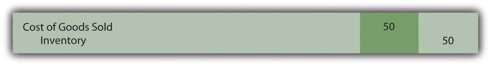
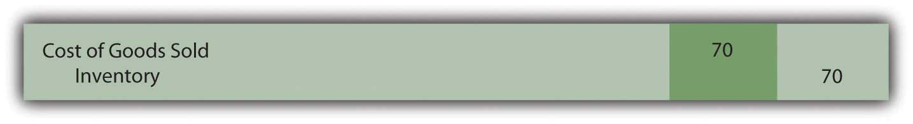
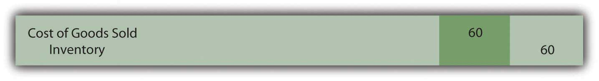

At the end of this section, students should be able to meet the following objectives:
Question: In the coverage of financial accounting to this point, general standardization has been evident. Most transactions are recorded in an identical fashion by all companies. This defined structure helps ensure understanding. It also enhances the ability of decision makers to compare results from one year to the next or from one company to another. For example, inventory—except in unusual circumstances—is always reported at historical cost unless its value is lower. Experienced decision makers should be well aware of that criterion when they are reviewing the inventory figures reported by a company.
However, an examination of the notes to financial statements for some well-known businesses shows an interesting inconsistency in the reporting of inventory (emphasis added).
Mitsui & Co. (U.S.A.) Inc.—as of March 31, 2009: “Inventories, consisting mainly of commodities and materials for resale, are stated at the lower of cost, principally on the specific-identification basis, or market.”
Johnson & Johnson and Subsidiaries—as of December 28, 2008: “Inventories are stated at the lower-of-cost-or-market determined by the first-in, first-out method.”
Safeway Inc. and Subsidiaries—as of December 31, 2008: “Merchandise inventory of $1,740 million at year-end 2008 and $1,866 million at year-end 2007 is valued at the lower of cost on a last-in, first-out (‘LIFO’) basis or market value.”
Bristol-Myers Squibb—as of December 31, 2008: “Inventories are generally stated at average cost, not in excess of market.”
“Specific-identification basis,” “first-in, first-out,” “last-in, first-out,” “average cost”—what information do these terms provide? Why are all of these companies using different methods? In the financial reporting of inventory, what is the significance of disclosing that a company applies “first-in, first-out,” “last-in, first-out,” or the like?
Answer: In the previous chapter, the cost of all inventory items was kept constant over time. Although that helped simplify the initial presentation of relevant accounting issues, such stability is hardly a realistic assumption. For example, the retail price of gasoline has moved up and down like a yo-yo in recent years. The cost of some commodities, such as bread and soft drinks, has increased gradually for many decades. In other industries, prices actually tend to fall over time. New technology products often start with a high price that drops as the manufacturing process ramps up and becomes more efficient. Several years ago, personal computers cost tens of thousands of dollars and now sell for hundreds.
A key event in accounting for inventory is the transfer of cost from the inventory T-account to cost of goods sold as the result of a sale. The inventory balance is reduced and the related expense is increased. For large organizations, such transactions can take place thousands of times each day. If each item has an identical cost, no problem exists. This standard amount is always reclassified into expense to reflect the sale.
However, if inventory items are acquired at different costs, which cost is moved from asset to expense? At that point, a cost flow assumption must be selected by company officials to guide reporting. That choice can have a significant impact on both the income statement and the balance sheet. It is literally impossible to analyze the reported net income and inventory balance of a company such as ExxonMobil without knowing the cost flow assumption that has been applied.
Question: An example is probably the easiest approach by which to demonstrate cost flow assumptions. Assume a men’s retail clothing store holds $120 in cash. On October 26, Year One, one blue dress shirt is bought for $50 in cash for resell purposes. Later, near the end of the year, this style of shirt becomes especially popular. On December 29, Year One, the store’s manager buys a second shirt exactly like the first but this time at a cost of $70. Cash on hand has been depleted completely ($120 less $50 and $70) but the company now holds two shirts in its inventory.
Then, on December 31, Year One, a customer buys one of these two shirts by paying cash of $110. Regardless of the cost flow assumption, the company retains one blue dress shirt in inventory at the end of the year and cash of $110. It also reports sales revenue of $110. Those facts are not in doubt.
From an accounting perspective, two questions are left to be resolved (1) what is the cost of goods sold reported for the one shirt that was sold and (2) what is the cost remaining in inventory for the one item still on hand?
In simpler terms, should the $50 or $70 be reclassified to cost of goods sold; should the $50 or $70 remain in ending inventory? For financial accounting, the importance of the answers to those questions cannot be overemphasized. What are the various cost flow assumptions and how are they applied to inventory?
Answer: SPECIFIC IDENTIFICATION. In a literal sense, specific identificationInventory cost flow method in which a company physically identifies both its remaining inventory and the inventory that was sold to customers. is not a cost flow assumption. Companies that use this approach are not making an assumption because they know which item was sold. By some technique, they are able to identify the inventory conveyed to the customer and reclassify its cost to expense.
For some types of inventory, such as automobiles held by a car dealer, specific identification is relatively easy to apply. Each vehicle tends to be somewhat unique and can be tracked through identification numbers. Unfortunately, for many other types of inventory, no practical method exists for determining the physical flow of merchandise.
Thus, if the men’s retail store maintains a system where the individual shirts are marked in some way, it will be possible to know whether the $50 shirt or the $70 shirt was actually conveyed to the customer. That cost can be moved from asset to expense.
However, for identical items like shirts, cans of tuna fish, bags of coffee beans, hammers, packs of notebook paper and the like, the idea of maintaining such precise records is ludicrous. What informational benefit could be gained by knowing whether the first blue shirt was sold or the second? In most cases, the cost of creating such a meticulous record-keeping system far outweighs any potential advantages.
FIRST-IN, FIRST-OUT (FIFO). The FIFOInventory cost flow assumption based on the oldest costs being transferred first from inventory to cost of goods sold so that the most recent costs remain in ending inventory. cost flow assumption is based on the premise that selling the oldest item first is most likely to mirror reality. Stores do not want inventory to grow unnecessarily old and lose freshness. The oldest items are often placed on top in hopes that they will sell first before becoming stale or damaged. Therefore, although the identity of the actual item sold is rarely known, the assumption is made in applying FIFO that the first (or oldest) cost is always moved from inventory to cost of goods sold.
Note that it is not the oldest item that is necessarily sold but rather the oldest cost that is reclassified to cost of goods sold. No attempt is made to determine which shirt was purchased by the customer. Here, because the first shirt cost $50, the following entry is made to record the expense and reduce the inventory.
Figure 9.1 Journal Entry—Reclassification of the Cost of One Piece of Inventory Using FIFO
For this retail store, the following financial information is reported if FIFO is applied. Two shirts were bought for ($50 and $70) and one shirt was sold for $110.
| FIFO | |
|---|---|
| Cost of Goods Sold (One Unit—the First One) | $50 |
| Gross Profit ($110 less $50) | $60 |
| Ending Inventory (One Unit—the Last One) | $70 |
In a period of rising prices, the earliest (cheapest) cost moves to cost of goods sold and the latest (more expensive) cost is retained in ending inventory. For this reason, in inflationary times, FIFO is associated with a higher reported net income as well as a higher reported inventory total on the company’s balance sheet. Not surprisingly, these characteristics help make it a popular choice.
Link to multiple-choice question for practice purposes: http://www.quia.com/quiz/2092903.html
LAST-IN, FIRST-OUT (LIFO). LIFOInventory cost flow assumption based on the most recent costs being transferred first from inventory to cost of goods sold so that the oldest costs remain in ending inventory. is the opposite of FIFO: the most recent costs are moved to expense as sales are made.
Theoretically, the LIFO assumption is often justified as more in line with the matching principle. Shirt One was bought on October 26 whereas Shirt Two was not acquired until December 29. Revenue was earned on December 31. Proponents of LIFO argue that matching the December 29 cost with the December 31 revenue is more appropriate than using a cost incurred months earlier. According to this reasoning, income is more properly determined with LIFO because a relatively current cost is shown as cost of goods sold rather than a figure that is out-of-date. The difference is especially apparent in periods of high inflation. “By matching current costs against current sales, LIFO produces a truer picture of income; that is, the quality of income produced by the use of LIFO is higher because it more nearly approximates disposable income.”Clayton T. Rumble, “So You Still Have Not Adopted LIFO,” Management Accountant, October 1983, 50. Note 1 to the 2008 financial statements for ConocoPhillips reiterates that point: “LIFO is used to better match current inventory costs with current revenues.”
The last cost incurred in buying two blue shirts was $70 so that amount is reclassified to expense at the time of the first sale.
Figure 9.2 Journal Entry—Reclassification of the Cost of One Piece of Inventory Using LIFO
Although the physical results of these transaction are the same (one unit was sold, one unit was retained, and the company holds $110 in cash), the financial picture painted using the LIFO cost flow assumption is quite different from in the earlier FIFO example.
| LIFO | |
|---|---|
| Cost of Goods Sold (One Unit—the Last One) | $70 |
| Gross Profit ($110 Less $70) | $40 |
| Ending Inventory (One Unit—the First One) | $50 |
Characteristics commonly associated with LIFO can be seen in this example. When prices rise, LIFO companies report lower net income (the most recent and, thus, the most costly purchases are moved to expense) and a lower inventory account on the balance sheet (because the earlier and cheaper costs remain in the inventory T-account). As will be discussed in a subsequent section, LIFO is popular in the United States because it helps reduce the amount companies pay in income taxes.
Link to multiple-choice question for practice purposes: http://www.quia.com/quiz/2092888.html
AveragingInventory cost flow assumption based on the average cost being transferred from inventory to cost of goods sold so that the same average cost remains in ending inventory.. Because the identity of the items conveyed to buyers is unknown, this final cost flow assumption holds that using an average of all costs is the most logical solution. Why choose any individual cost if no evidence exists of its validity? The first item received might have been sold or the last. Selecting either is an arbitrary decision. If items with varying costs are held, using an average provides a very appealing logic. In the shirt example, the two units cost a total of $120 ($50 plus $70) so the average is $60 ($120/2 units).
Figure 9.3 Journal Entry—Reclassification of the Cost of One Piece of Inventory Using Averaging
Although no shirt did cost $60, this average serves as the basis for both cost of goods sold as well as the cost of the item still on hand. All costs are included in arriving at each reported figure.
| Averaging | |
|---|---|
| Cost of Goods Sold (One Unit—the Average One) | $60 |
| Gross Profit ($110 less $60) | $50 |
| Ending Inventory (One Unit—the Average One) | $60 |
Averaging has many supporters. However, it can be a more complicated system to implement especially if costs change frequently. In addition, it does not offer the benefits that make FIFO (higher reported income) and LIFO (lower taxes in the United States) so appealing. Company officials often arrive at such practical decisions based on an evaluation of advantages and disadvantages and not on theoretical merit.
Link to multiple-choice question for practice purposes: http://www.quia.com/quiz/2092923.html
U.S. GAAP tends to apply standard reporting rules for many transactions to make financial statements more usable by decision makers. The application of an inventory cost flow assumption is one area where a significant variation is present. A company can choose to use specific identification, first-in, first-out (FIFO), last-in, first-out (LIFO), or averaging. Each of these assumptions determines the cost moved from inventory to cost of goods sold to reflect the sale of merchandise in a different manner. The reported inventory balance as well as the expense on the income statement (and, hence, net income) are dependent on the cost flow assumption that is selected.